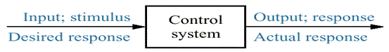
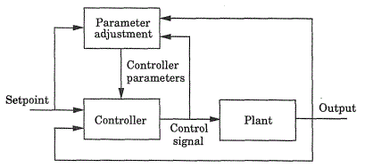

Control system engineering is the branch of engineering which deals with the principles of control theory to design a system which gives desired behavior in a controlled manner. Hence, this is interdisciplinary. Control system engineers analyze, design, and optimize complex systems which consist of highly integrated coordination of mechanical, electrical, chemical, metallurgical, electronic or pneumatic elements. Thus control engineering deals with diverse range of dynamic systems which include human and technological interfacing.

Control system engineering focuses on analysis and design of systems to improve the speed of response, accuracy and stability of system. The two methods of control system include classical methods and modern methods. The mathematical model of system is set up as first step followed by analysis, designing and testing. Necessary conditions for the stability are checked and finally optimization follows.
In classical method, mathematical modeling is usually done in time domain, frequency domain or complex s domain. Step response of a system is mathematically modeled in time domain differential analysis to find its settling time, % overshoot etc. Laplace transforms are most commonly used in frequency domain to find the open loop gain, phase margin, band width etc of system. Concept of transfer function, sampling of data, poles and zeros, system delays all comes under the classical control engineering stream.
Modern control engineering deals with Multiple Input Multiple Output (MIMO) systems, State space approach, Eigen values and vectors etc. Instead of transforming complex ordinary differential equations, modern approach converts higher order equations to first order differential equations and solved by vector method.
Automatic control systems are most commonly used as it does not involve manual control. The controlled variable is measured and compared with a specified value to obtain the desired result. As a result of automated systems for control purposes, the cost of energy or power as well as the cost of process will be reduced increasing its quality and productivity.
Historical Review of Control Engineering
The application of Automatic control system is believed to be in use even from the ancient civilizations. Several types of water clock were designed and implemented to measure the time accurately from the third century BC, by Greeks and Arabs. But the first Automatic system is considered as the Watts Flyball Governor in 1788, which started the industrial revolution. The mathematical modeling of Governor is analyzed by Maxwell in 1868. In 19th century, Leonhard Euler, Pierre Simon Laplace and Joseph Fourier developed different methods for mathematical modeling. The second system is considered as Al Butz’s Damper Flapper - thermostat in 1885. He started the company now named as Honeywell.
The beginning of 20th century is known as the golden age of control engineering. During this time classical control methods were developed at the Bell Laboratory by Hendrik Wade Bode and Harry Nyquist. Automatic controllers for steering ships were developed by Minorsky, Russian American Mathematician. He also introduced the concept of Integral and Derivative Control in 1920s. Meanwhile the concept of stability was put forward by Nyquist and followed by Evans. The transforms were applied in control system by Oliver Heaviside. Modern Control Methods were developed after 1950s by Rudolf Kalman, to overcome the limitation of classical Methods. PLC’s were introduced in 1975.
Types of Control Engineering
Control engineering has its own categorization depending on the different methodologies used, which are as follows.
- Classical Control Engineering : The systems are usually represented by using ordinary differential equations. In classical control engineering, these equations are transformed and analyzed in transformed domain. Laplace transform, Fourier transform and z transform are examples. This method is commonly used in Single Input Single Output systems.
- Modern Control Engineering : In modern control engineering higher order differential equations are converted to first order differential equations. These equations are solved very similar to vector method. By doing so, many complications dealt in solving higher order differential equations are solved. These are applied in Multiple Input Multiple Output systems where analysis in frequency domain is not possible. Nonlinearities with multiple variables are solved by modern methodology. State space vectors, Eigen values and Eigen Vectors longs to this category. State Variables describe the input, output and system variables.
- Robust Control Engineering : In robust control methodology, the changes in performance of system with change in parameters are measured for optimization. This aids in widening the stability and performance, also in finding alternate solutions. Hence in robust control the environment, internal in accuracies, noises and disturbances are considered to reduce the fault in system.
- Optimal Control Engineering : In optimal control engineering, the problem is formulated as mathematical model of process, physical constraints and performance constraints, to minimize the cost function. Thus optimal control engineering is the most feasible solution for designing a system with minimum cost.
- Adaptive Control Engineering : In adaptive control engineering, the controllers employed are adaptive controllers in which parameters are made adaptive by some mechanism. The block diagram given below shows an adaptive control system.
Adaptive Control Engineering
In this kind of controllers an additional loop for parameter adjustment is present in addition to the normal feedback of process. - Nonlinear Control Engineering : Non linear control engineering focuses on the non linearity’s which cannot be represented by using linear ordinary differential equations. This system will exhibit multiple isolated equilibrium points, limit cycles, bifurcations with finite escape time. The main limitation is that it requires laborious mathematical analysis. In this analysis the system is divided into linear part and non linear part.
- Game Theory : In game theory, each system will have to reduce its cost function against the disturbances / noises. Hence it is a study of conflict and co operation. The disturbances will try to maximize the cost function. This theory is related to robust and optimal control engineering.
 by
by